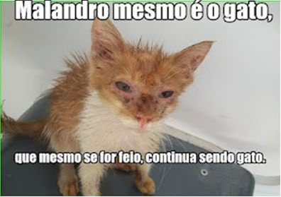

<!-- Desenvolvedor: Leandro Fortaleza -->
<!doctype html>
<html lang="pt-br">

<head>
	<title>Lição 04 Peça 50</title> <!-- alt_f002 -->
        <meta charset="utf-8">
        <script src="../wilib/js/lib/require.js"></script>
        <script src="../wilib/js/app.js"></script>
        <link rel="stylesheet" href="../wilib/css/font-awesome.css">
        <link rel="stylesheet" href="../wilib/css/meioAmbiente.css">

	<script>
		require(['../wilib/js/lib/alternativa_botao'], function (edi) {

			edi.setConfig({
				titulo: 'Observe a fotografia e em seguida responda a questão. ',
        mascote: 'mascote',
        tempoFinal: 10
			});

      //balões
      var botoes = [

          {texto: 'Sim, porque a palavra gato pode ser empregada com dois sentidos, o literal, que é a denominação da espécie animal, e a figurada que se refere a uma pessoa bonita. ', dataCorreta: true},
          {texto: 'Não, porque o gato é muito feio não existe possibilidade de dizer que ele é bonito se estou vendo que ele é feio.', dataCorreta: false}

      ];

			edi.alternativa_botao(botoes, function (a, b) {
          //cb
      }, function (a) {
        if (!a)
					mensagem('Atenção! A palavra gato tem duplo sentido, reflita um pouco mais.');
				else
					mensagem('Correto! Gato na frase indica o animal e a qualidade que indica que alguém é bonito.')
      }, {
				width: 300,
				height: 70,
				left: 430,
				top: 180,
				btnBranco: true,
				animacao: true,
				tamanhoTexto: 14
      });

			$("#balao").peBalao({
					scaleX: -1,
					scaleY: -1,
					top: 120,
					left: 0
			})

			

			$('.alter-btn, #texto').hide();
		});
	</script>

	<style>
		.alter-btn {
			width: 300px;
			display: none;
		}

		#_btn {
			position: absolute;
			left: 12px;
			top: 85px;
			border-radius: 15px;
			border: 2px solid #000;
		}

		#balao {
			position: absolute;
			left: 250px;
			top: 90px;
			width: 150px;
			height: 110px;
			font-size: 13px;
			background: #fff;
			border: 1px solid #ccc;
			text-align: center;
			border-radius: 10px;
			cursor: pointer;
		}

		#balao:hover {
			box-shadow: 0 0 15px rgba(0, 0, 0, 0.3);
		}

		#texto {
			position: absolute;
			left: 435px;
			top: 90px;
			width: 290px;
			height: 69px;
			padding: 10px;
			border: 1px solid #ccc;
			border-radius: 10px;
			text-align: center;
			font-size: 13px;
		}

		#texto p {
			margin-top: 15px;
		}

		#certo{
      position: absolute;
		  width: 302px;
		  height: 68px;
		  top: 132px;
		  left: 434px;
		  font-size: 14px;
		  border-radius: 15px;
		  padding: 5px;
		  border: 2px dashed #9C0;
		  text-align: center;
		  color: #9C0;
		  display: none; 

    }

	</style>
</head>

<body>
</body>
	


	<div id="texto">
		<p>
			Podemos afirmar que houve emprego da Conotação na frase sobre o gato?
		</p>
	</div>
</html>
